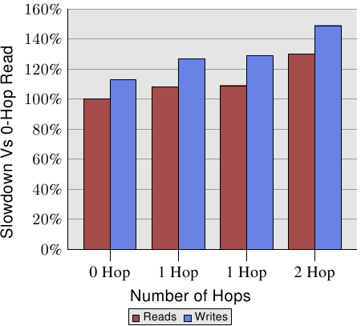

Weekly Edition
Return to the Front page
| |||||||||||||||||||||||||||||||||||||||||||||||||||||||||||||||||||||||||||||||||||||||||||||||||||||||||||||||||||||||||||||||||||||||||||||||||||||||||||||||||||||||||||||||||||||||||||||||||||||||||||||||||||||||||||||||
|
| |||||||||||||||||||||||||||||||||||||||||||||||||||||||||||||||||||||||||||||||||||||||||||||||||||||||||||||||||||||||||||||||||||||||||||||||||||||||||||||||||||||||||||||||||||||||||||||||||||||||||||||||||||||||||||||||
Memory part 4: NUMA support
[Editor's note: welcome to part 4 of Ulrich Drepper's "What every
programmer should know about memory"; this section discusses the particular
challenges associated with non-uniform memory access (NUMA) systems. Those
who have
not read part 1, part 2, and part 3
may wish to do so
now. As always, please send typo reports and the like to lwn@lwn.net
rather than posting them as comments here.]
5 NUMA SupportIn Section 2 we saw that, on some machines, the cost of access to specific regions of physical memory differs depending on where the access originated. This type of hardware requires special care from the OS and the applications. We will start with a few details of NUMA hardware, then we will cover some of the support the Linux kernel provides for NUMA.
5.1 NUMA HardwareNon-uniform memory architectures are becoming more and more common. In the simplest form of NUMA, a processor can have local memory (see Figure 2.3) which is cheaper to access than memory local to other processors. The difference in cost for this type of NUMA system is not high, i.e., the NUMA factor is low. NUMA is also—and especially—used in big machines. We have described the problems of having many processors access the same memory. For commodity hardware all processors would share the same Northbridge (ignoring the AMD Opteron NUMA nodes for now, they have their own problems). This makes the Northbridge a severe bottleneck since all memory traffic is routed through it. Big machines can, of course, use custom hardware in place of the Northbridge but, unless the memory chips used have multiple ports—i.e. they can be used from multiple busses—there still is a bottleneck. Multiport RAM is complicated and expensive to build and support and, therefore, it is hardly ever used. The next step up in complexity is the model AMD uses where an interconnect mechanism (Hypertransport in AMD's case, technology they licensed from Digital) provides access for processors which are not directly connected to the RAM. The size of the structures which can be formed this way is limited unless one wants to increase the diameter (i.e., the maximum distance between any two nodes) arbitrarily.
An efficient topology for the nodes is the hypercube, which limits the number of nodes to 2C where C is the number of interconnect interfaces each node has. Hypercubes have the smallest diameter for all systems with 2n CPUs. Figure 5.1 shows the first three hypercubes. Each hypercube has a diameter of C which is the absolute minimum. AMD's first-generation Opteron processors have three hypertransport links per processor. At least one of the processors has to have a Southbridge attached to one link, meaning, currently, that a hypercube with C=2 can be implemented directly and efficiently. The next generation is announced to have four links, at which point C=3 hypercubes will be possible. This does not mean, though, that larger accumulations of processors cannot be supported. There are companies which have developed crossbars allowing larger sets of processors to be used (e.g., Newisys's Horus). But these crossbars increase the NUMA factor and they stop being effective at a certain number of processors. The next step up means connecting groups of CPUs and implementing a shared memory for all of them. All such systems need specialized hardware and are by no means commodity systems. Such designs exist at several levels of complexity. A system which is still quite close to a commodity machine is IBM x445 and similar machines. They can be bought as ordinary 4U, 8-way machines with x86 and x86-64 processors. Two (at some point up to four) of these machines can then be connected to work as a single machine with shared memory. The interconnect used introduces a significant NUMA factor which the OS, as well as applications, must take into account. At the other end of the spectrum, machines like SGI's Altix are designed specifically to be interconnected. SGI's NUMAlink interconnect fabric is very fast and has a low latency; both of these are requirements for high-performance computing (HPC), especially when Message Passing Interfaces (MPI) are used. The drawback is, of course, that such sophistication and specialization is very expensive. They make a reasonably low NUMA factor possible but with the number of CPUs these machines can have (several thousands) and the limited capacity of the interconnects, the NUMA factor is actually dynamic and can reach unacceptable levels depending on the workload. More commonly used are solutions where clusters of commodity machines are connected using high-speed networking. But these are not NUMA machines; they do not implement a shared address space and therefore do not fall into any category which is discussed here.
5.2 OS Support for NUMATo support NUMA machines, the OS has to take the distributed nature of the memory into account. For instance, if a process is run on a given processor, the physical RAM assigned to the process's address space should come from local memory. Otherwise each instruction has to access remote memory for code and data. There are special cases to be taken into account which are only present in NUMA machines. The text segment of DSOs is normally present exactly once in a machine's physical RAM. But if the DSO is used by processes and threads on all CPUs (for instance, the basic runtime libraries like libc) this means that all but a few processors have to have remote accesses. The OS ideally would “mirror” such DSOs into each processor's physical RAM and use local copies. This is an optimization, not a requirement, and generally hard to implement. It might not be supported or only in a limited fashion. To avoid making the situation worse, the OS should not migrate a process or thread from one node to another. The OS should already try to avoid migrating processes on normal multi-processor machines because migrating from one processor to another means the cache content is lost. If load distribution requires migrating a process or thread off of a processor, the OS can usually pick an arbitrary new processor which has sufficient capacity left. In NUMA environments the selection of the new processor is a bit more limited. The newly selected processor should not have higher access costs to the memory the process is using than the old processor; this restricts the list of targets. If there is no free processor matching that criteria available, the OS has no choice but to migrate to a processor where memory access is more expensive. In this situation there are two possible ways forward. First, one can hope the situation is temporary and the process can be migrated back to a better-suited processor. Alternatively, the OS can also migrate the process's memory to physical pages which are closer to the newly-used processor. This is quite an expensive operation. Possibly huge amounts of memory have to be copied, albeit not necessarily in one step. While this is happening the process, at least briefly, has to be stopped so that modifications to the old pages are correctly migrated. There are a whole list of other requirements for page migration to be efficient and fast. In short, the OS should avoid it unless it is really necessary. Generally, it cannot be assumed that all processes on a NUMA machine use the same amount of memory such that, with the distribution of processes across the processors, memory usage is also equally distributed. In fact, unless the applications running on the machines are very specific (common in the HPC world, but not outside) the memory use will be very unequal. Some applications will use vast amounts of memory, others hardly any. This will, sooner or later, lead to problems if memory is always allocated local to the processor where the request is originated. The system will eventually run out of memory local to nodes running large processes. In response to these severe problems, memory is, by default, not allocated exclusively on the local node. To utilize all the system's memory the default strategy is to stripe the memory. This guarantees equal use of all the memory of the system. As a side effect, it becomes possible to freely migrate processes between processors since, on average, the access cost to all the memory used does not change. For small NUMA factors, striping is acceptable but still not optimal (see data in Section 5.4). This is a pessimization which helps the system avoid severe problems and makes it more predictable under normal operation. But it does decrease overall system performance, in some situations significantly. This is why Linux allows the memory allocation rules to be selected by each process. A process can select a different strategy for itself and its children. We will introduce the interfaces which can be used for this in Section 6.
5.3 Published InformationThe kernel publishes, through the sys pseudo file system (sysfs), information about the processor caches below
/sys/devices/system/cpu/cpu*/cache In Section 6.2.1 we will see interfaces which can be used to query the size of the various caches. What is important here is the topology of the caches. The directories above contain subdirectories (named index*) which list information about the various caches the CPU possesses. The files type, level, and shared_cpu_map are the important files in these directories as far as the topology is concerned. For an Intel Core 2 QX6700 the information looks as in Table 5.1.
What this data means is as follows:
If the CPU had more cache levels, there would be more index* directories. For a four-socket, dual-core Opteron machine the cache information looks like Table 5.2:
As can be seen these processors also have three caches: L1i, L1d, L2. None of the cores shares any level of cache. The interesting part for this system is the processor topology. Without this additional information one cannot make sense of the cache data. The sys file system exposes this information in the files below
/sys/devices/system/cpu/cpu*/topology Table 5.3 shows the interesting files in this hierarchy for the SMP Opteron machine.
Taking Table 5.2 and Table 5.3 together we can see that no CPU has hyper-threads (the thread_siblings bitmaps have one bit set), that the system in fact has four processors (physical_package_id 0 to 3), that each processor has two cores, and that none of the cores share any cache. This is exactly what corresponds to earlier Opterons. What is completely missing in the data provided so far is information about the nature of NUMA on this machine. Any SMP Opteron machine is a NUMA machine. For this data we have to look at yet another part of the sys file system which exists on NUMA machines, namely in the hierarchy below
/sys/devices/system/node This directory contains a subdirectory for every NUMA node on the system. In the node-specific directories there are a number of files. The important files and their content for the Opteron machine described in the previous two tables are shown in Table 5.4.
This information ties all the rest together; now we have a complete picture of the architecture of the machine. We already know that the machine has four processors. Each processor constitutes its own node as can be seen by the bits set in the value in cpumap file in the node* directories. The distance files in those directories contains a set of values, one for each node, which represent a cost of memory accesses at the respective nodes. In this example all local memory accesses have the cost 10, all remote access to any other node has the cost 20. {This is, by the way, incorrect. The ACPI information is apparently wrong since, although the processors used have three coherent HyperTransport links, at least one processor must be connected to a Southbridge. At least one pair of nodes must therefore have a larger distance.} This means that, even though the processors are organized as a two-dimensional hypercube (see Figure 5.1), accesses between processors which are not directly connected is not more expensive. The relative values of the costs should be usable as an estimate of the actual difference of the access times. The accuracy of all this information is another question.
5.4 Remote Access CostsThe distance is relevant, though. In [amdccnuma] AMD documents the NUMA cost of a four socket machine. For write operations the numbers are shown in Figure 5.3.
 Writes are slower than reads, this is no surprise. The interesting parts are the costs of the 1- and 2-hop cases. The two 1-hop cases actually have slightly different costs. See [amdccnuma] for the details. The fact we need to remember from this chart is that 2-hop reads and writes are 30% and 49% (respectively) slower than 0-hop reads. 2-hop writes are 32% slower than 0-hop writes, and 17% slower than 1-hop writes. The relative position of processor and memory nodes can make a big difference. The next generation of processors from AMD will feature four coherent HyperTransport links per processor. In that case a four socket machine would have diameter of one. With eight sockets the same problem returns, with a vengeance, since the diameter of a hypercube with eight nodes is three.
All this information is available but it is cumbersome to use. In Section 6.5 we will see an interface which helps accessing and using this information easier. The last piece of information the system provides is in the status of a process itself. It is possible to determine how the memory-mapped files, Copy-On-Write (COW) pages and anonymous memory are distributed over the nodes in the system. {Copy-On-Write is a method often used in OS implementations when a memory page has one user at first and then has to be copied to allow independent users. In many situations the copying is unnecessary, at all or at first, in which case it makes sense to only copy when either user modifies the memory. The operating system intercepts the write operation, duplicates the memory page, and then allows the write instruction to proceed.} Each process has a file /proc/PID/numa_maps, where PID is the ID of the process, as shown in Figure 5.2.
00400000 default file=/bin/cat mapped=3 N3=3 00504000 default file=/bin/cat anon=1 dirty=1 mapped=2 N3=2 00506000 default heap anon=3 dirty=3 active=0 N3=3 38a9000000 default file=/lib64/ld-2.4.so mapped=22 mapmax=47 N1=22 38a9119000 default file=/lib64/ld-2.4.so anon=1 dirty=1 N3=1 38a911a000 default file=/lib64/ld-2.4.so anon=1 dirty=1 N3=1 38a9200000 default file=/lib64/libc-2.4.so mapped=53 mapmax=52 N1=51 N2=2 38a933f000 default file=/lib64/libc-2.4.so 38a943f000 default file=/lib64/libc-2.4.so anon=1 dirty=1 mapped=3 mapmax=32 N1=2 N3=1 38a9443000 default file=/lib64/libc-2.4.so anon=1 dirty=1 N3=1 38a9444000 default anon=4 dirty=4 active=0 N3=4 2b2bbcdce000 default anon=1 dirty=1 N3=1 2b2bbcde4000 default anon=2 dirty=2 N3=2 2b2bbcde6000 default file=/usr/lib/locale/locale-archive mapped=11 mapmax=8 N0=11 7fffedcc7000 default stack anon=2 dirty=2 N3=2 The important information in the file is the values for N0 to N3, which indicate the number of pages allocated for the memory area on nodes 0 to 3. It is a good guess that the program was executed on a core on node 3. The program itself and the dirtied pages are allocated on that node. Read-only mappings, such as the first mapping for ld-2.4.so and libc-2.4.so as well as the shared file locale-archive are allocated on other nodes. As we have seen in Figure 5.3 the read performance across nodes falls by 9% and 30% respectively for 1- and 2-hop reads. For execution, such reads are needed and, if the L2 cache is missed, each cache line incurs these additional costs. All the costs measured for large workloads beyond the size of the cache would have to be increased by 9%/30% if the memory is remote to the processor.
To see the effects in the real world we can measure the bandwidth as in Section 3.5.1 but this time with the memory being on a remote node, one hop away. The result of this test when compared with the data for using local memory can be seen in Figure 5.4. The numbers have a few big spikes in both directions which are the result of a problem of measuring multi-threaded code and can be ignored. The important information in this graph is that read operations are always 20% slower. This is significantly slower than the 9% in Figure 5.3, which is, most likely, not a number for uninterrupted read/write operations and might refer to older processor revisions. Only AMD knows. For working set sizes which fit into the caches, the performance of write and copy operations is also 20% slower. For working sets exceeding the size of the caches, the write performance is not measurably slower than the operation on the local node. The speed of the interconnect is fast enough to keep up with the memory. The dominating factor is the time spent waiting on the main memory. (Log in to post comments)
Memory part 4: NUMA support Posted Oct 18, 2007 13:33 UTC (Thu) by dany (subscriber, #18902) [Link] Thanks for another very informative article! I am wondering, in relevant opteron CPU measured, how much slower are read/write operations on remote memory 2-hops away (figure 5.4 is about 1 hop away remote memory)?
Memory part 4: NUMA support Posted Oct 19, 2007 4:47 UTC (Fri) by sweikart (guest, #4276) [Link] Intel is working on a point-to-point processor interconnect called QuickPath, which is a competitor to AMD's HyperTransport. AMD will support HyperTransport 3.0 with its next-generation sockets (AM2+ and F+). HyperTransport 3.0 lets you split the links in half, so you can have 8 links total (and HT3.0 links can run twice as fast as HT2.0 links, so the half-width links should have good throughput). I assume this will enable a fully-connected (diameter of 1) eight-socket server.
Memory part 4: NUMA support Posted Oct 22, 2007 0:35 UTC (Mon) by dlang (subscriber, #313) [Link] several comments a radius 1 arrangement can actually include 3 CPUs, think a triangle, every machine is at most one hop from the memory the Opteron already has versions that have four HT links, they are the 800/8000 series chips targeted at 8 cpu systems
Memory part 4: NUMA support Posted Oct 25, 2007 12:47 UTC (Thu) by joib (guest, #8541) [Link] the Opteron already has versions that have four HT links, they are the 800/8000 series chips targeted at 8 cpu systemsThat is not correct. All current Opterons (including the 800(0) series) have 3 HT links. The difference is that in the 800(0) series all 3 HT links are cache coherent, whereas there is only one cache coherent link on the 200(0) series and none on the 100(0) series (and athlon64). That being said, the recently released quad core Opterons do in principle support 4 HT links, but so far they are using the existing socket so they are limited to 3 links until the next generation socket is introduced.
Memory part 4: NUMA support Posted Oct 27, 2007 6:51 UTC (Sat) by dlang (subscriber, #313) [Link] it's also possible to have a radius-3 arrangement with only 3 links1--2-- | | | 3--4 | | | | 5--6 | | | | 7--8-- this leaves CPU's 1 and 7 with an extra link available for connections to a southbridge.
Memory part 4: NUMA support Posted Jan 10, 2008 14:27 UTC (Thu) by rengolin (guest, #48414) [Link] > a radius 1 arrangement can actually include 3 CPUs, think a triangle, every machine is at most one hop from the memory Actually it's N+1 being N the number of dimensions you build your computer. In the three-dimensional reality a tetrahedron (4CPUs) is radius 1, in the two-dimensional a triangle and so on, therefore we can increase the number of CPUs in radius 1 by building computers in higher dimensions! ;)
|
|||||||||||||||||||||||||||||||||||||||||||||||||||||||||||||||||||||||||||||||||||||||||||||||||||||||||||||||||||||||||||||||||||||||||||||||||||||||||||||||||||||||||||||||||||||||||||||||||||||||||||||||||||||||||||||||